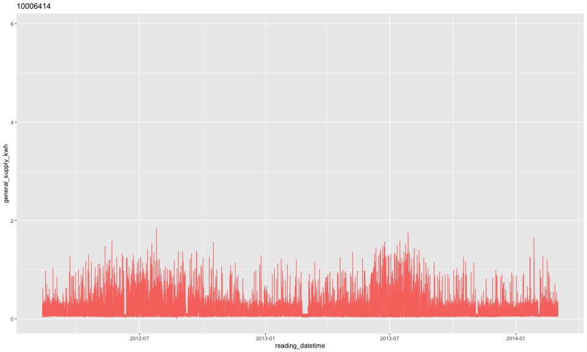
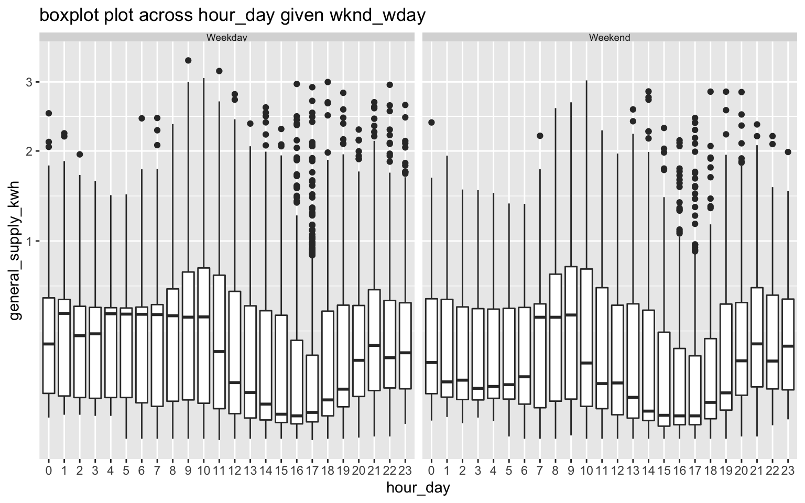
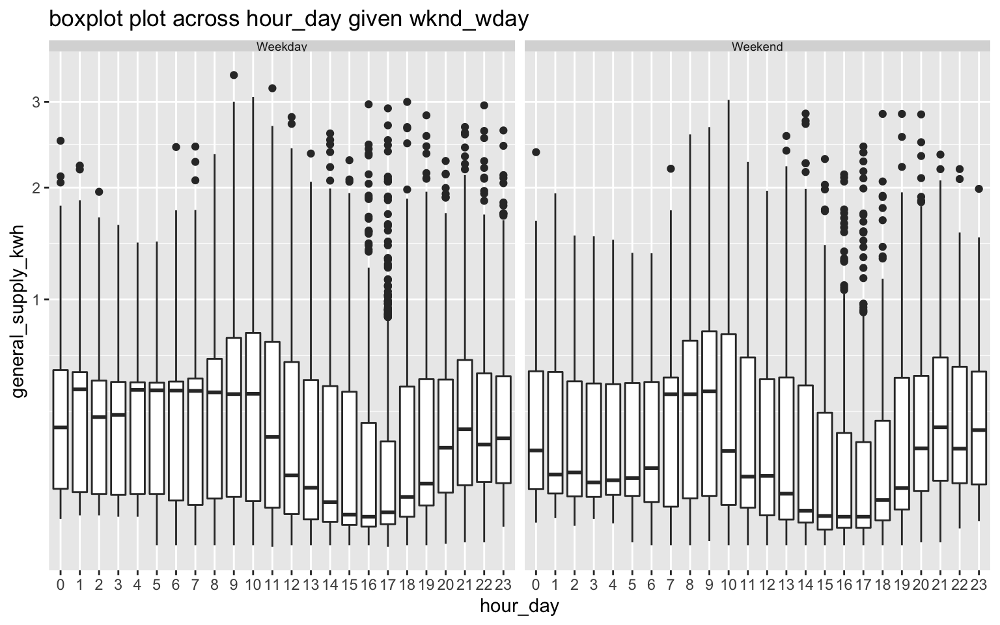

Exploring probability distributions for bivariate temporal granularities
Sayani Gupta
Source: vignettes/gravitas_vignette.Rmd
gravitas_vignette.RmdIntroduction
Temporal data are available at various resolution depending on the context. Often in time series analysis, data collected at finer scale needs to be explored also at coarser temporal scales. This approach requires deconstructing time in various possible ways leading to linear (e.g. days, weeks), circular (e.g. day-of-week) or aperiodic (e.g. day-of-month) time granularities. The hierarchical structure of time also creates a natural nested ordering resulting in single or multiple order-up granularities. For a conventional Gregorian calendar, examples of single-order-up granularity may include hour-of-day, minute-of-hour and examples of multiple-order-up granularity may include hour-of-week or minute-of-day. All of these granularites might be useful in throwing light on the periodicity of the data.
Exploration of large quantities of temporal data across so many different deconstructions of time becomes clumsy without a systematic approach.
This vignette describes the tools in the package gravitas for systematically exploring large quantities of temporal data across different time deconstructions by visualizing the probability distributions using range of graphics in ggplot2.
Analysis of smart meter data
The smart_meter10 data set in the package is a tsibble providing the energy consumption for ten households from customer trials.
smart_meter10 %>% select(customer_id,
reading_datetime,
general_supply_kwh,
everything()
)
#> # A tsibble: 259,235 x 8 [30m] <UTC>
#> # Key: customer_id [10]
#> customer_id reading_datetime general_supply_… event_key
#> <chr> <dttm> <dbl> <dbl>
#> 1 10006704 2012-06-01 10:00:00 0.24 0
#> 2 10006704 2012-06-01 10:30:00 0.245 0
#> 3 10006704 2012-06-01 11:00:00 0.206 0
#> 4 10006704 2012-06-01 11:30:00 0.217 0
#> 5 10006704 2012-06-01 12:00:00 0.214 0
#> 6 10006704 2012-06-01 12:30:00 0.23 0
#> 7 10006704 2012-06-01 13:00:00 0.898 0
#> 8 10006704 2012-06-01 13:30:00 0.197 0
#> 9 10006704 2012-06-01 14:00:00 0.255 0
#> 10 10006704 2012-06-01 14:30:00 0.199 0
#> # … with 259,225 more rows, and 4 more variables:
#> # controlled_load_kwh <dbl>, gross_generation_kwh <dbl>,
#> # net_generation_kwh <dbl>, other_kwh <dbl>To have an understanding of how different the energy consumption for each household of the trial is, energy consumption is plotted against time with each transition state indicating one household for a sample. If we plot the raw data for all of them, it is difficult to get insights of their behavior.

Things become harder when we try to visualize periodicity in the data for all households. For example, if we plot the energy consumption across each hour of the day, the structure of the data suggest that there are several data points for each hour of the day for just one household. Hence, for several households, there will be a blob of points for each hour of the day.

So the question is how to explore systematically multiple perspectives of this smart meter data across different time granularities? The solution is to visualize the probability distributions across these granularities to find regular / nearly-periodic patterns or anomalies in behaviors.
Let us see how we can analyze the energy behavior of these households by making allowances for the following aspects of time granularities: Computation, interaction and visualization.
Computation
Get set of possible granularities with search_gran
Typically, the first thing we should have at our disposal for examining periodicities of energy behavior across time granularities is to know the number of time granularities we can look at exhaustively. If we consider conventional time deconstructions for a Gregorian calendar (second, minute, half-hour, hour, day, week, fortnight, month, quarter, semester, year), the following time granularities can be considered for this analysis.
library(tsibble)
interval(smart_meter10)
#> 30m
smart_meter10 %>% search_gran()
#> [1] "hhour_hour" "hhour_day" "hhour_week"
#> [4] "hhour_fortnight" "hhour_month" "hhour_quarter"
#> [7] "hhour_semester" "hhour_year" "hour_day"
#> [10] "hour_week" "hour_fortnight" "hour_month"
#> [13] "hour_quarter" "hour_semester" "hour_year"
#> [16] "day_week" "day_fortnight" "day_month"
#> [19] "day_quarter" "day_semester" "day_year"
#> [22] "week_fortnight" "week_month" "week_quarter"
#> [25] "week_semester" "week_year" "fortnight_month"
#> [28] "fortnight_quarter" "fortnight_semester" "fortnight_year"
#> [31] "month_quarter" "month_semester" "month_year"
#> [34] "quarter_semester" "quarter_year" "semester_year"The interval of this tsibble is 30 minutes, and hence the default for search_gran in this case, provides temporal granularities ranging from half-hour to year. If these options are considered too many, the default options can be modified to limit the possibilities. For example, the most coarse temporal unit can be set to be a “month”.
smart_meter10 %>%
search_gran(highest_unit = "month")
#> [1] "hhour_hour" "hhour_day" "hhour_week"
#> [4] "hhour_fortnight" "hhour_month" "hour_day"
#> [7] "hour_week" "hour_fortnight" "hour_month"
#> [10] "day_week" "day_fortnight" "day_month"
#> [13] "week_fortnight" "week_month" "fortnight_month"This looks better. However, some intermediate temporal units might not be pertinent to the analysis and we might want to remove them from the list of granularities that we want to examine using the argument filter_out in search_gran.
smart_meter10 %>% search_gran(ugran = "month",
filter_out = c("hhour", "fortnight")
)
#> [1] "hour_day" "hour_week" "hour_month"
#> [4] "hour_quarter" "hour_semester" "hour_year"
#> [7] "day_week" "day_month" "day_quarter"
#> [10] "day_semester" "day_year" "week_month"
#> [13] "week_quarter" "week_semester" "week_year"
#> [16] "month_quarter" "month_semester" "month_year"
#> [19] "quarter_semester" "quarter_year" "semester_year"
Create any temporal granularity with create_gran()
After we have the set of granularities to look at, we should be able to compute any granularity using create_gran. These can be be used for exploring distribution of the time series across univariate temporal granularity or computing summary statistics across these categorizations.
The data is filtered for two customers and a new granularity “day-of-the-fortnight” is created and visualized to understand if the electricity demand consumption is different across days of the fortnight. From the letter value plot, we can not clearly observe any pattern across days of the fortnight for each individual household. But we can see the difference in distribution of energy consumption for these two households. Let us see if we can derive any other insights than the otherwise obvious observation that for most cases the second household has much less consumption than the first one. If we consider letter value F as a regular behavior and letter values beyond F as not-so-regular behavior, we can conclude that the regular behavior of the first household is more stable than the second household. However, the distribution of tail of the first household is more variable reflected through distinct letter values, implying when their not-so-regular behavior is quite extreme.
library(lvplot)
library(ggplot2)
library(dplyr)
library(tibble)
#> Warning: package 'tibble' was built under R version 3.5.2
smart_meter10 %>%
filter(customer_id %in% c(10006704, 10017936)) %>%
create_gran("day_fortnight") %>%
ggplot2::ggplot(aes(
x = as.factor(day_fortnight),
y = general_supply_kwh)) +
xlab("day_fortnight") +
geom_lv(
outlier.colour = "red",
aes(fill = ..LV..),
k = 5) +
facet_wrap(~customer_id) +
scale_fill_lv() +
theme_bw() +
scale_y_sqrt() 
Interaction
We can visualize the distribution of energy across univariate time granularities for deriving insights on periodic behavior. From the search list, we found that we can look at six granularities, that amounts to analyzing six graphics. However, what happens if we want to see the distribution of energy across two granularities at a time? This is equivalent to looking at the distribution of energy consumption across one granularity conditional on another one. One way can be to plot one of the granularities on the x-axis and another on the facet. Different perspectives of the data can be derived by placing time granularity across x-axis and facets.
So, what is the number of pairs of granularities we can look at? It is equivalent to taking 2 granularities from 6, which essentially means we need to examine 30 plots. The good news is, not all time granularities can be plotted together and we do not have to analyse so many plots!
Harmony/clash can be identified to considerably reduce the number of visualizations that can aid exploratory analysis.
smart_meter10 %>%
is_harmony(gran1 = "hour_day",
gran2 = "day_week")
#> [1] "TRUE"
smart_meter10 %>%
is_harmony(gran1 = "hour_day",
gran2 = "day_week",
facet_h = 14)
#> [1] "FALSE"
smart_meter10 %>%
is_harmony(gran1 = "day_month",
gran2 = "week_month")
#> [1] "FALSE"Let us now look at all the harmonies that we can examine. Fortunately, we are left with only 13 out of 30 visualizations. We can also play with the argument facet_h, which represents the maximum number of levels allowed for facet variables, to reduce or increase the number of harmonies.
smart_meter10 %>% harmony(
ugran = "month",
filter_out = c("hhour")
)
#> # A tibble: 38 x 4
#> facet_variable x_variable facet_levels x_levels
#> <chr> <chr> <int> <int>
#> 1 day_week hour_day 7 24
#> 2 day_fortnight hour_day 14 24
#> 3 day_month hour_day 31 24
#> 4 week_fortnight hour_day 2 24
#> 5 week_month hour_day 5 24
#> 6 fortnight_month hour_day 3 24
#> 7 day_month hour_week 31 168
#> 8 week_fortnight hour_week 2 168
#> 9 week_month hour_week 5 168
#> 10 fortnight_month hour_week 3 168
#> # … with 28 more rowsVisualization
We want to visualize distribution of the measured variable general_supply_kwh across these harmonies through different distribution plots using prob_plot. We have several options for visualizing statistical distributions and each comes with some pros and cons which we need to consider while choosing a good one for our context. Traditional methods of plotting distributions include boxplots and violin plots, while more recent methods include ridge plots, quantile plots or letter-value plots.
gran_advice provides check points before plotting a distribution. It includes recommended distribution plots depending on the levels of the two granularities plotted. Assumptions are made to ensure display is not too cluttered by the space occupied by various kinds of distribution plots. Moreover, it also advice on the number of observations used for drawing the distribution plot so that one can ensure that they are enough before jumping on to plot a distribution. Furthermore, it advice if the number of observations varies significantly across facets or within facets.
smart_meter10 %>% gran_advice(
"week_month",
"hour_day"
)
#> $harmony
#> [1] "TRUE"
#>
#> $homogenous
#> # A tibble: 1 x 2
#> inter_facet intra_facet
#> <chr> <chr>
#> 1 TRUE TRUE
#>
#> $plot_choices
#> [1] "violin" "lv" "quantile" "boxplot"
#>
#> $gran_obs
#> # A tibble: 24 x 6
#> hour_day `1` `2` `3` `4` `5`
#> <fct> <dbl> <dbl> <dbl> <dbl> <dbl>
#> 1 0 2474 2464 2518 2489 857
#> 2 1 2470 2470 2518 2486 854
#> 3 2 2469 2469 2520 2486 855
#> 4 3 2468 2468 2522 2486 856
#> 5 4 2467 2468 2521 2486 856
#> 6 5 2468 2468 2520 2487 856
#> 7 6 2470 2469 2519 2486 855
#> 8 7 2470 2472 2518 2484 854
#> 9 8 2470 2471 2519 2479 854
#> 10 9 2470 2470 2520 2478 856
#> # … with 14 more rows
#>
#> attr(,"class")
#> [1] "gran_advice"gran_obs can be employed to see if number of observations per category is large enough to draw distribution plot. In this case, number of observations are much less on weekends compared to weekdays, but enough to have reliable estimates of distribution.
smart_meter10 %>% gran_obs(
"week_month",
"wknd_wday"
)
#> # A tibble: 2 x 6
#> wknd_wday `1` `2` `3` `4` `5`
#> <chr> <dbl> <dbl> <dbl> <dbl> <dbl>
#> 1 Weekday 42348 42195 43144 42468 14695
#> 2 Weekend 17008 17024 17347 17094 5912Through prob_plot we can choose one from the list of recommended plots. Warnings are generated if users try to plot clashes, number of facet variables are too high or number of observations used to compute statistical summaries for distribution are not large enough. Currently, we can choose from “boxplot”, “violin”, “ridge”, “lv” or “quantile” to visualize distributions.
Box plot of energy consumption across wknd_wday (facet) and hour-day (x-axis) are plotted for the same two households. For the second households, outliers are more prominent implying their regular behavior is more stable. For the first household, energy behavior is not significantly different for weekdays and weekends. For the second household, median energy consumption for the early morning hours is extremely high compared for weekends and weekdays.
cust1 <- smart_meter10 %>%
filter(customer_id %in% c(10006704)) %>%
prob_plot("wknd_wday",
"hour_day",
response = "general_supply_kwh",
plot_type = "boxplot") +
scale_y_sqrt()cust2 <- smart_meter10 %>%
filter(customer_id %in% c(10017936))%>%
prob_plot("wknd_wday",
"hour_day",
response = "general_supply_kwh",
plot_type = "boxplot") +
scale_y_sqrt() 

Future development
To develop a framework so that these individual distributions are utilized to group subjects into similar pockets of behavior.
Make
gravitaswork with big data tools like sparklyrAny periodic/aperiodic temporal granularities computation given a hierarchical structure/calendar.
Acknowledgements
Thanks to PhD supervisors Prof. Rob J Hyndman, Prof. Dianne Cook and Google Summer of Code 2019 mentor Prof. Antony Unwin for their support and always leading by example. The fine balance of encouraging me to work on my ideas and stepping in to help when I need has made the devlopment of this package a great learning experience for me.
Moreover, I want to thank my cohort at NUMBATS at Monash University for always lending an ear and sharing their wisdom and experience on developing R packages whenever needed.